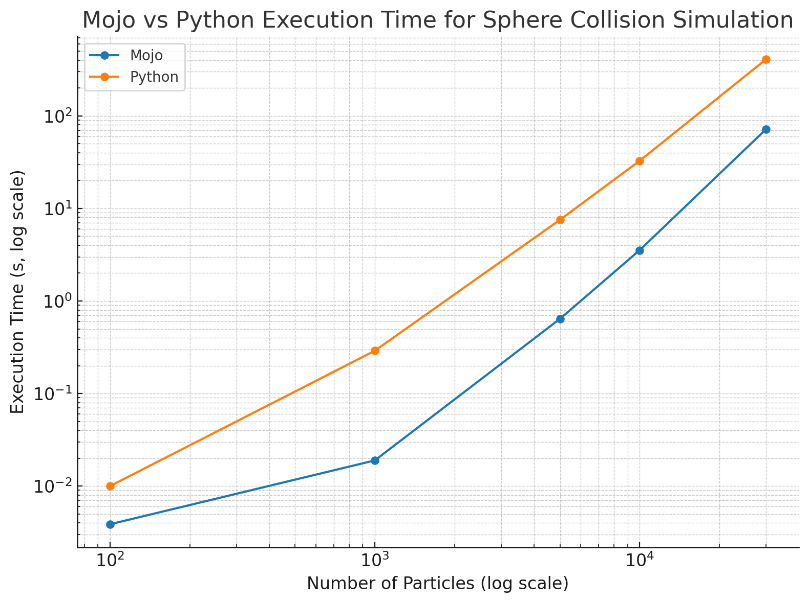

Mojo promises Python's ease of use with C-like performance. But what does it take to port a real Python project? I converted a hard-sphere collision simulation from Python to Mojo to find out. Here’s a look at the key changes, Mojo's powerful Python interoperability, and the lessons learned along the way.
The code can be found here.
Key Changes: From class to struct and Traits
The most significant changes involved moving from Python's dynamic classes to Mojo's static, performance-oriented structures.
1. Embracing Value Semantics with struct
In Python, everything is an object, accessed through references. This is flexible but adds overhead. Mojo introduces the struct, a value type that stores its data directly and contiguously in memory. This improves data locality and is a cornerstone of Mojo's performance.
-
Python:
python class Particle: # ... -
Mojo:
mojo struct Particle: var px: float # ...
2. The Power of Traits
A plain struct is just a data container. To make it useful—for example, to store it in a List or use it in a priority queue—it must conform to certain behaviors. In Mojo, these behaviors are defined by traits.
Traits are contracts that a type can implement. For our simulation, the Event struct needs to be sortable in a priority queue, so it must implement the Comparable trait, which defines comparison methods like __lt__ and __gt__.
@fieldwise_init
struct Particle(Copyable, Movable):
var px: float
var py: float
var vx: float
var vy: float
The @value decorator is a convenient shorthand that automatically implements several common traits like Copyable and Movable. While the decorator itself may evolve, the underlying concept is crucial: traits give you explicit control over a type's capabilities, which is central to Mojo's philosophy of safe, high-performance programming.
3. A New Memory Mindset
Python's garbage collector simplifies memory management. In Mojo, you must be more deliberate. In our Python Event class, we could store direct references to Particle objects. This is not feasible in Mojo due to its ownership rules.
The solution was to refactor the Event struct to store the integer indices of particles in the main particle list, rather than direct references. This is a common pattern when porting from a garbage-collected language and, while a hurdle, it forces a more memory-aware design that unlocks performance.
Mojo's Superpower: Seamless Python Interop
You don't have to wait for the entire Python ecosystem to be rewritten in Mojo. You can import and use any Python library directly. Our Mojo simulation leverages this for configuration, data logging, and visualization.
Reading Configuration and Saving Data
Instead of writing a new file parser, we just use Python's tomllib and csv modules.
def run_headless(...):
# Import Python modules
csv = Python.import_module("csv")
builtins = Python.import_module("builtins")
# Use them as if they were native
file_handle = builtins.open(logfile, "w")
writer = csv.writer(file_handle)
writer.writerow(["time", "kinetic_energy"])
# ...
Mojo seamlessly calls into the Python runtime, and we can easily convert data between the two worlds.
Speed comparsion
Below is the comparison of the execution time of the two implementations.
| Number of Particles | Mojo Time (s) | Python Time (s) | Speedup (Python ÷ Mojo) |
|---|---|---|---|
| 100 | 0.00387 | 0.01 | ~2.58× |
| 1,000 | 0.01893 | 0.29 | ~15.32× |
| 5,000 | 0.64098 | 7.53 | ~11.75× |
| 10,000 | 3.53767 | 32.72 | ~9.25× |
| 30,000 | 71.68333 | 408.62 | ~5.70× |

Generating Plots with Matplotlib
The Mojo version saves each simulation frame as an image using Python's matplotlib. This is a fantastic demonstration of interoperability.
def animate_simulation(...):
plt = Python.import_module("matplotlib.pyplot")
# ...
# Pass Mojo lists to Python for plotting
ax.scatter(
Python.list(pxs), # pxs is a Mojo List[float]
Python.list(pys), # pys is a Mojo List[float]
s=Python.list(sizes)
)
plt.savefig(filename)
This ability to leverage the vast Python ecosystem is Mojo's killer feature, making it practical for real-world projects today.
Final Thoughts
The payoff, however, is significant. The Mojo version runs significantly faster, but more importantly, the seamless Python interoperability provides a practical bridge. You can migrate performance-critical code to Mojo while leaving the rest in Python, getting the best of both worlds. Mojo isn't just a faster Python; it's a pragmatic path to high-performance computing without leaving a beloved ecosystem behind.The journey from Python to Mojo is less about a direct translation and more about a shift in mindset. The primary hurdle is moving from dynamic, reference-based objects to static, value-based structs and a trait-based system.
The journey from Python to Mojo is less about a direct translation and more about a shift in mindset. The primary hurdle is moving from dynamic, reference-based objects to static, value-based structs and a trait-based system.
The payoff, however, is significant. The Mojo version runs significantly faster, but more importantly, the seamless Python interoperability provides a practical bridge. You can migrate performance-critical code to Mojo while leaving the rest in Python, getting the best of both worlds. Mojo isn't just a faster Python; it's a pragmatic path to high-performance computing without leaving a beloved ecosystem behind.